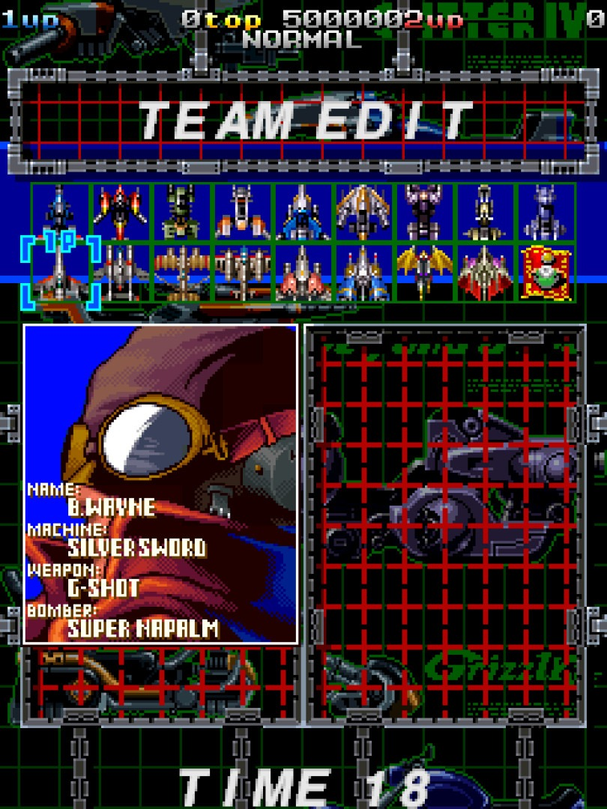

© 1998 RAIZING / 8ing CO., LTD.
CHASE! ARRANGED BY COIN-OP GAME STUDIO
CHASE! ARRANGED BY COIN-OP GAME STUDIO
XBOX360HOMEBREW
Three Batriders, one credit. Put the game beside its ROM set, tell it how your display stands, and press START.
ARMED POLICE BATRIDER is RAIZING’s 1998 arcade shooting game. CHASE! is an arranged mode by COIN-OP GAME STUDIO that sits beside the original game on one title screen: a chain to build, medals that fly to you, and a rank that stays within reach. This booklet is for the Xbox 360 version 0.14: both games, a training mode, save states and replays, and gadgets beside the game that show what the arcade board is thinking.
Put batrider360.xex, batrider360_manual.bin and batrider.zip in one folder on a drive the console can write to — its hard drive or a USB drive — and start batrider360.xex from the dashboard.
The console’s logo comes first, then NOW LOADING while the ROM set is read; the very first time, the game also prepares its menu sounds and keeps them in batrider360_menusnd.bin. Then come the arcade board’s WARNING screen, COIN-OP GAME STUDIO’s logo and the game’s own opening; START goes to the title screen. (A dark red screen means the ROM set was not found: page .)
BATRIDER is an upright game: the arcade cabinet’s monitor stands on its short edge. ROTATION in OPTIONS’ GENERAL SCREEN (page ) tells the game how your display stands:
| Rotation | Your display | The picture |
|---|---|---|
| OFF | Standing the usual way | Upright in the middle, the gadgets on both sides (page ). A new install starts here. |
| LEFT | On its side, its top edge on your left | Turned to fill the length of the screen, the gadgets in strips at its top and bottom. |
| RIGHT | On its side, its top edge on your right | The same, turned the other way. |
Either way the game and its menus read upright, as the pictures in this booklet are shown.
Not every television is built to stand on its side. Use a display or a mount made to be turned, never block its vents, and do not turn a set while it is switched on.
| Control | What it does |
|---|---|
| Left stick or ✚ d-pad | Move the ship; move through menus (held, it repeats) |
| A | SHOT — hold to fire. In menus: choose, or the next value |
| B | BOMB. In menus: back |
| X | SPECIAL: options’ formation (Battle Garegga guests); in CHASE!, the Chase Break. On the state and replay pages: delete |
| RT | AUTO SHOT — fires by itself while held, 30 times a second |
| BACK | While a stage is running: the pause menu. In menus: back. In a replay: its pause |
| START | Boot screens: to the title. Title pages: choose; PLAY and TRAINING: play. In a stage: the arcade’s own START, for its secret commands (page ). OPTIONS pages: close them all |
| LB / RB | In a replay: slower / faster. On the TRAINING page’s RANK: 10% at a time. In the manual: a page back / on |
CONTROLS in OPTIONS gives each of A, B, X, Y, LB, RB, LT and RT its job in the game: SHOT, BOMB, SPECIAL, AUTO SHOT or nothing (page ). Above is how a new install starts. The menus always answer to A, B, X, START and BACK, whatever CONTROLS says.
EXIT, the title menu’s last row, goes back to the dashboard. What the game keeps is written as it changes, so nothing is lost.

The title screen carries a menu of six rows. Up and down choose; A or START opens the row. The line under the menu says what it is for.
| PLAY | A credit of the game (below) |
| TRAINING | A stage or a boss, set up as you like (page ) |
| LOAD STATE | Back to a moment you kept (page ) |
| REPLAY DATA | Your replays (page ) |
| OPTIONS | Screen, gadgets, controls, sound, manual (page ) |
| EXIT | Back to the dashboard |
There are no coins: both games are in free play. Left alone on the title menu for half a minute, the title gives way to the game’s demonstration; START brings it back.

PLAY opens a page of four rows. Left and right (or A) change a value; START plays from any row; B or BACK goes back to the title menu.
| START RUN | A credit of the MODE below |
| MODE | CHASE! or ORIGINAL (below) |
| CONTINUES | 3, 5 or 7 continues after a GAME OVER, in both games |
| DIP SWITCHES | The original game’s settings (page ). Grey in CHASE!; CHANGED in red when they are not the factory’s |
| Mode | START RUN plays |
|---|---|
| CHASE! | A credit of the arranged mode: the chain, the magnet, the Chase Break, and a rank that runs between 50% and 75%. This is the MODE a new install starts in. |
| ORIGINAL | A credit of the original game, exactly as the arcade board plays it (page ). |
Each MODE keeps its own rankings, so CHASE! scores and original-game scores never share a table. A change is made at once: the board starts the other game behind the menu, and the menus’ headings name it (BATRIDER CHASE! or BATRIDER). TRAINING has the same MODE row.
A credit begins with three screens. Each has a timer and takes the highlighted choice when it runs out.


SELECT COURSE describes the course under the cursor at the foot of the screen.
| Course | Stages | What it is |
|---|---|---|
| TRAINING | 3 | AUTO BOMBER: when you are hit with a bomb in stock, it goes off by itself. In the original game only: CHASE! has no auto bomb |
| NORMAL | 5 | NORMAL BOMBER: the intermediate course |
| ADVANCE | 7 | NORMAL BOMBER: the advanced course |
| SPECIAL | bosses | ONLY BOSS, FULL POWER UP: the bosses one after another, your ship at full power from the start |
(The arcade’s TRAINING course is a course of the game. The title menu’s TRAINING is this version’s practice mode: page .)

SELECT TYPE decides who flies.
One of the three ready-made teams below.
Your own team: pick any three riders, one after another. The screen shows each rider’s machine, weapon and bomber.
Three riders left to chance.
One rider of your choice, who flies all three of the credit’s turns.
TEAM EDIT and SELECT PLAYER show every rider on a roster of two rows: the nine Batriders along the top, and nine guest riders from RAIZING’s earlier shooting games along the second. Left and right move along a row; up and down change rows.
A team is three riders. They fly one at a time, in order: when one is shot down the next takes over, and the credit ends with the third. (In the original game, the DIP switches can make it one to four: page .)


The stage scrolls up the screen. Shoot what comes, pick up what it leaves, and reach the boss with riders to spare.
| Default | ||
|---|---|---|
| SHOT | A | Hold to fire. While the button is up, the shot charge builds. |
| AUTO SHOT | RT | Hold, and the shot fires by itself at CONTROLS’ AUTOFIRE rate. |
| BOMB | B | Your rider’s bomb. Bombs are kept in stock along the bottom of the screen. |
| SPECIAL | X | For the four Battle Garegga guests, steps the formation of the options flying with you (V, BACK, FRONT, CIRCLE, CONTROL). In CHASE! it is also the Chase Break. |

Your ship is the one at the bottom. Its riders take turns: the team’s icons at the top left show who is flying and who is waiting.
Small enemies fall to a few shots. Larger ones, and the ground targets among the buildings, take more — and leave more behind.
Items are handed out in a fixed order that repeats: a medal, a power-up, a medal, a power-up, an option — five times round, the last of them a large power-up.
| Item | |
|---|---|
| POWER / BIG P | Shot power-ups, small and large |
| OPTION | A gun pod that flies with your ship |
| BOMB / BIG B | Bomb stock, small and large |
| MEDAL | Points — see below |
| 1UP | Brings back a rider who has been shot down |
Each medal you collect makes the next one worth more, up a ladder of 19 steps:
100 · 200 · 300 · 400 · 500 · 600 · 700 · 800 · 900 · 1,000 · 2,000 · 3,000 · 4,000 · 5,000 · 6,000 · 7,000 · 8,000 · 9,000 · 10,000
Let one medal fall off the bottom of the screen and the ladder starts again from 100.
The game watches how you are doing. Shooting, picking up items and staying alive push its rank up, and a higher rank is a harder game; losing a rider brings it down again. The original game lets rank run free. CHASE! starts it at 50% and never lets it past 75%.
Every stage ends with a boss, and every boss has a time limit. CHASE! counts it down in seconds at the top of the screen. When the time is up, the fight is over whether the boss has fallen or not.
A CHASE! credit redraws the top of the screen and adds a rail down its left edge. This is the whole game in two glances.


The white disc in a red ring is the only part of your ship a bullet can hurt. Everything else of the ship may overlap a bullet freely. It is drawn at the ship’s own level, so whatever the game draws above the ship covers it too.
It is shown in every credit of both games. HITBOX on the TRAINING page and in OPTIONS’ DEBUG MENU sets what is drawn: OFF, PLAYER (your ship’s disc, as a new install has it) or ALL.

ALL adds the boxes the arcade board itself tests, as it tests them:
Everything CHASE! changes, on one page. The pages after it take the parts one at a time.
Starts at 50% and climbs to 75% at most. Losing a rider lowers it, never below 50%. A high multiplier makes it climb faster.
Every kill adds one. Sixteen kills raise the multiplier a step, to x8. Every kill pays its value times the multiplier.
1.5 seconds, refilled by every kill — in full while you fly in the upper half of the screen, to one second in the lower half.
Above x1: two multiplier steps lost. At x1: the chain breaks.
The multiplier and the medal ladder are halved, and the timer waits three seconds.
Freezes the timer while it goes off, and for a second after.
Pulled to your ship when you are near them — from anywhere while SHOT is held. Dropping one from the tenth step or higher breaks the chain.
SPECIAL at x4 or better: every bullet and small enemy becomes a medal; the multiplier goes back to x1 and rests five seconds.
Every 1,000,000 points a downed rider returns. Five lives at most.
Shots aimed at you are loosened when you fly close to the shooter.
A new CHASE! credit starts at rank 50%. From there the game raises it as it always does — a little every frame, more for shooting, items and extends — and CHASE! adds a push of its own for every multiplier step you hold above x1. At 75% it stops: no moment of a CHASE! credit is harder than that.
Losing a rider eases the rank back toward 50% and never below it. A continue puts it back to 50% exactly.
CHASE! always uses the board’s HARD difficulty with three riders, and replaces the original game’s bonus rider with its own extends. The DIP switches do not change it, and the TRAINING course’s automatic bomb is off. It is a one-player game.
Kill, and keep killing. The chain is a count of kills; the multiplier is what it is worth.


Every enemy you destroy adds one to the chain. Every sixteen raise the multiplier one step, from x1 up to x8, and everything you destroy pays its own value times the multiplier. The chain goes on counting past x8; it is the multiplier that stops there.
A kill also refills the chain timer, the gauge on the left rail:
| Where you are | A kill refills the timer to |
|---|---|
| FORWARD — the upper half of the screen | 1.5 seconds (full) |
| BACK — the lower half | 1 second |
The forward mark on the rail tells you which it is. Push up the screen and the chain is easier to hold; hang back and every gap between enemies is half a second shorter.
Against a boss, your hits count toward the chain as well, and they hold the timer up between its waves. A boss fight is a good place to climb.

Above x1 you lose two multiplier steps, and the timer is set to one second. If nothing dies in that second you lose two more.
At x1 the chain breaks: the count goes back to zero.
From x8, with no kills at all, that is four and a half seconds from a full timer to the break.
| Shot down | The multiplier is halved (x8 becomes x4), the medal ladder is halved with it, and the timer is frozen for three seconds while the next rider arrives. |
| A bomb | The timer is frozen for as long as the bomb is going off and for one second after. Kills during it count. |
| A medal dropped | Letting a medal fall off the screen from the tenth step of the ladder (1,000) or higher breaks the chain. |
| A Chase Break | You spend the multiplier yourself: back to x1 (page ). |
| A continue | Chain, multiplier and medal ladder start again. |


The medal ladder is the original game’s. What CHASE! adds is a magnet.

A medal that comes within about a hundred pixels of your ship — some two fifths of the screen’s width — is pulled straight to it.
Hold SHOT and the magnet reaches the whole screen: every medal on it flies to you.
Medals lying still on the ground — the ones a bomb shakes out of buildings — are pulled from anywhere, button or not.
The magnet works while your rider is flying. In the moment between one rider going down and the next arriving, medals fall as they always did.
The magnet makes the ladder much safer to climb, and the ladder is worth protecting twice over: a medal lost from the tenth step or higher costs you the ladder and the chain.
Trade your multiplier for a screen full of medals.


When the multiplier is x4 or better, pressing SPECIAL (X) makes a Chase Break: you cash the multiplier in.
Then the multiplier rests for five seconds. Kills still score, but they build no chain, and the rail’s gauge shows the rest draining in white. There is no second Chase Break until you have climbed back to x4.
On the screen it goes by its short name: the stage line flashes CASH IN as it goes off.
Bosses are not small enemies. If there is nothing on the screen to take — a boss alone, no bullets — the press does nothing and you keep your multiplier.
A medal made by a Chase Break is a bonus, not a risk: if one of them does get away, the ladder is not reset.
SPECIAL is also the button that changes your options’ formation. For most riders the two do not collide. A few of the guest riders change formation with SPECIAL. For those, a quick press (let go within half a second) changes the formation, when you let go; a long press (held for half a second) is the Chase Break, and the formation stays as it was.

Every 1,000,000 points earns an extend, and the stage line flashes EXTEND.
An extend brings back a rider who has been shot down; they rejoin at the back of the team. If nobody is down, the extend is banked and handed over the moment somebody is.
You can hold five lives at most — riders flying plus extends in the bank. An extend earned at five pays 100,000 points instead, and the line flashes MAX LIVES.
The number beside your team’s icons is the count of lives. It turns red at one.

When the last rider goes down the game asks CONTINUE? and counts down. Press START to fly on with the same team.
A credit has three continues unless PLAY’s CONTINUES says five or seven. A continue starts the chain, the multiplier and the medal ladder again and puts the rank back to 50%.
A continue also marks the credit’s score as invalid (page ). TRAINING has no continues: its GAME OVER brings back the TRAINING page.
With PLAY’s MODE set to ORIGINAL, START RUN is ARMED POLICE BATRIDER as the arcade board plays it.
None of CHASE!’s rules apply: no chain, no magnet, no Chase Break, and rank runs free. It plays on the arcade board’s factory settings — NORMAL difficulty, three riders, an extend item at every 1,500,000 points — unless you change them with the DIP switches (page ). It is in free play, and the screen is the game’s own, with no CHASE tag; the hitbox shows here too. The gadgets beside it work in both games (page ).
What both games share is everything around the credit: the menus, the pause menu, the continues set on PLAY, TRAINING, save states and replays, and one player. Each keeps its own rankings.

TRAINING on the title menu opens one page where you set up a run: a stage or a boss of either game, with the lives, bombs, power and rank you want. Up and down choose a row, left and right (or A) change it, and START plays from any row. B or BACK goes back to the title menu.
The page keeps its settings until you switch the console off, and a save state keeps them too. HITBOX, MODE and the DIP switches are the same settings as everywhere else.
| START RUN | Play with the settings below. |
| MODECHASE! / ORIGINAL | Which game’s rules the run plays by: the same setting as PLAY’s. |
| TEAMCHOOSE / SAME | CHOOSE: the game’s own select screens. SAME: the team you flew last, straight into the stage. Grey until you have flown a team. |
| STAGE | M.CITY, AIRPORT, SKY HIGH, S.SYSTEM, HIGH WAY, Z.CITY, BUILDING, or EXTRA BOSSES. |
| START AT BOSS | OFF: from the stage’s start. Otherwise one of the stage’s bosses, straight away, its secret bosses included (table below). EXTRA BOSSES has no OFF. |
| LIVES1 – 9 · ORIGINAL 1 – 4 | Lives at the start (3 at first). In CHASE! the ones past four wait in the extends bank. |
| BOMBS0 – 4 | Bombs at the start and at each rider’s arrival (1 at first). |
| SHOT POWER1 – 4 | Shot power at the start and at each rider’s arrival (4, full, at first). |
| RANKDEFAULT · 0 – 100% | DEFAULT: the game moves the rank as it always does. A percentage holds it there for the whole run; LB / RB step 10% at a time. In CHASE! it holds between 51% and 76%, the mode’s own limits. |
| INVINCIBLEOFF / ON | Your ship takes no damage. |
| INFINITE BOMBSOFF / ON | The bomb stock stays full. |
| GAME SPEED100% / 75% / 50% | Slows the game down. The music keeps its own speed. |
| HITBOXOFF / PLAYER / ALL | What hitboxes are drawn (page ). |
| DIP SWITCHES | The original game’s settings (page ). Grey in CHASE!. |
| Stage | START AT BOSS |
|---|---|
| M.CITY | CONFRICT |
| AIRPORT | BAZZCOK · GOB-ROBO |
| SKY HIGH | BOREDOM · BASHINET |
| S.SYSTEM | DEVIATE · BLACK HEART |
| HIGH WAY | ENVY · SOBUT · BLUNT · TSUMUJIMARU · HAYATEMARU |
| Z.CITY | GRUBBY |
| BUILDING | DISCHARGE |
| EXTRA BOSSES | BASHINET 2 · BASHINET R · B.HEART 2 · GLOW SQUID |
With TEAM on CHOOSE the game’s select screens come first; with SAME the stage begins at once. A run ends when its stage or its boss is cleared, or on GAME OVER: training has no continues. Either way the TRAINING page comes back with START RUN chosen, so one press of START plays the same again. Training never enters the rankings, its score is shown as invalid, and it makes no replay (page ).

BACK during a run opens the TRAINING PAUSE menu. A chooses, B or BACK resumes.
| RESUME | On with the run |
| RESTART | The training stage again from its start, same team |
| SAVE STATE LOAD STATE | The save state pages (page ) |
| OPTIONS | OPTIONS over the run (page ) |
| QUIT TO TRAINING | Back to the TRAINING page |
| QUIT TO TITLE | Back to the title menu |
RESTART and the two QUITs ask first: A again is YES, B is NO.
A boss you want to learn: set START AT BOSS, TEAM SAME and INVINCIBLE, and every START puts you straight back in the fight. GAME SPEED 50% gives you time to read its patterns; HITBOX ALL shows you exactly where its bullets can hurt.

OPTIONS opens from the title menu and from the pause menu. Up and down choose a row; A opens a page; left and right change GADGETS and LANGUAGE. B or BACK goes back to the page under it, and START closes every page at once. What you change is kept (page ).
Every page is a box with its name at the top, its rows, a line of help for the row chosen, and the buttons it takes.
| GENERAL SCREEN | The picture: its size, place, rotation, scanlines, brightness and shape (page ) |
| GADGETSON / OFF | The panels beside the game (page ). They need a 16:9 screen and PICTURE SIZE INTEGER or FULL; otherwise a line under the menu says why they are off |
| CONTROLS | Each button’s job (page ) |
| SECRET COMMANDS | The arcade’s own START commands (page ) |
| SOUND | Volumes and the sound tests (page ) |
| MANUAL | This booklet on the screen (page ) |
| DEBUG MENU | Hitboxes, rankings, default settings. From the title menu only (page ) |
| LANGUAGEENGLISH / JAPANESE | Outside a credit only (page ) |

Left and right change a row; held, they repeat. The change shows at once.
Moving any of CUSTOM’s rows turns PICTURE SIZE to CUSTOM by itself. CUSTOM’s values are kept for each shape of screen — 16:9 or 4:3, upright or turned — and stay grey while INTEGER or FULL is shown.
| PICTURE SIZE | INTEGER: the largest sharp, whole-number size. FULL (as a new install): the full height of the screen. CUSTOM: the five rows below |
| SIZE X SIZE, Y SIZE | CUSTOM’s size, width and height. A: back to 100% |
| X / Y POSITION | CUSTOM’s place. A: back to the centre |
| ROTATION | OFF, LEFT or RIGHT: how your display stands (page ) |
| SCANLINES | OFF / ON: dark lines between the board’s lines, as on an arcade monitor |
| SCAN STRENGTH | How dark they are: 5% to 100% (35% at first) |
| BRIGHTNESS | 50% to 150% in 5% steps; 100% is the board’s own picture. A: back to 100% |
| SMOOTHING | OFF shows the game’s pixels as they are; ON blends them |
| ASPECT RATIO | AUTO (the console’s own setting), 16:9 or 4:3 |

One row for each of A, B, X, Y, LB, RB, LT and RT. Left and right give the button its job in the game:
| OFF | Nothing in play |
| SHOT · BOMB · SPECIAL | The arcade’s three buttons |
| AUTO SHOT | The shot, on and off at AUTOFIRE’s rate while held |
Two buttons may do the same job. AUTOFIRE sets AUTO SHOT’s rate: 30, 20, 15, 12 or 10 shots a second. DEFAULTS puts the buttons back as they came: A SHOT, B BOMB, X SPECIAL, RT AUTO SHOT, the rest OFF. START and BACK are not on the page: BACK is the pause, START is the game’s.

The arcade board has commands of its own: hold START during play and press a direction or a button. This page sets them for every credit, and they still work in play as on the arcade.
| NORMAL BULLETS | Their colour. GAME is the game’s own, blue. START + right in play |
| BALL BULLETS | GAME: orange. START + left in play |
| MISSILES | GAME: pink. START + down in play |
| SHOT RATE | Your ship’s own autofire: GAME, or 60 down to 7 shots a second. START + SHOT faster, START + SPECIAL slower. Set it outside a credit |
| SCORE BREAKDOWN | OFF / ON: every score you add, listed down the left of the screen. START + BOMB in play |

The colours are YELLOW, BLUE, GREEN, PURPLE, PINK, RED and ORANGE.
None of the commands changes the score, the rank or the rankings: they are part of the arcade game.

| MUSIC | 0% – 100%, in tens |
| SFX | Effects and voices, 0% – 100% |
| ATTRACT | The title’s and the demonstration’s volume, as a share of the two above |
| MUTE | All sound off |
| MUSIC TEST | 00 – 19, with the tune’s title. A plays it |
| SFX TEST | 20 – D7. A plays it |
The two tests are outside a credit only. In a credit, a change is heard once the game goes on.

From the title’s OPTIONS only.
The hitboxes drawn in every credit (page ). The same setting as TRAINING’s.
Left and right choose which; A asks CONFIRM? in red, and a second A erases those rankings. B takes it back.
Every option, DIP switch and button back to how a new install has them, after asking the same way. MODE, the rankings, save states and replays stay.


ENGLISH or JAPANESE: the words on the arcade board’s COURSE and TYPE select screens (English, or the board’s own Japanese) and the language of the MANUAL. The menus stay in English. It can be changed outside a credit only; a replay plays in the language it was recorded in.

The arcade board’s own settings for the original game, from PLAY or TRAINING with MODE on ORIGINAL. Left and right (or A) change a row; a value off the factory’s is red. DEFAULT puts all four back.
As the page says, a score is invalid if they are not the factory’s (page ). CHASE! is not touched by them: it always plays on its own fixed settings.
| Choices (the factory’s in bold) | |
|---|---|
| DIFFICULTY | EASY · NORMAL · HARD · VERY HARD |
| TIMER | HIGHEST · HIGH · NORMAL · LOW: the time the bosses allow |
| LIVES | 1 · 2 · 3 · 4: riders in the team |
| BONUS LIFE | NONE · 2000000 · 1500000 · 1000000: an extend item every so many points |
SELECT PLAYER needs three lives: with LIVES at another number the original game’s type select does without it.

BACK while a stage is running stops the game where it is and opens the pause menu; the music waits with it. Up and down choose a row and A chooses it; B or BACK resumes. (In a training run it is the TRAINING PAUSE: page .)
| RESUME | On with the game. |
| RESTART STAGE< STAGE / STATE > | STAGE: back to the start of the stage you are in. STATE: back to the save state you last saved or loaded in this credit. Left and right choose when there are both. It asks first, then the stage goes on at once. |
| FULL RESTART | The credit again from stage 1, with the same team: no selects. It asks first. |
| SAVE STATE · LOAD STATE | The save state pages (page ). |
| OPTIONS | OPTIONS over the game, without the DEBUG MENU (page ). |
| INVULNERABLEOFF / ON | While it is ON your ship cannot be shot down. Left, right or A changes it. |
| QUIT TO TITLE | Ends the credit, after asking. A score good enough goes to the name entry. |
A question is answered with A (YES) or B (NO). RESTART STAGE at stage 1 keeps the score as it was and records a new replay from there; further on, or with STATE, it makes the score invalid (page ).

INVULNERABLE is OFF as every credit starts. The moment you turn it on, the credit’s score is invalid — turning it off again does not bring it back. The credit ends without a name entry, the rankings stay as they were, and it makes no replay.


A cleared course ends with the game’s ending and staff roll (the arcade’s TRAINING course without them). Then SAVE REPLAY? offers to keep the whole credit, as you played it (page ).
Keep the game exactly as it is, and come back to that moment whenever you like.

SAVE STATE (pause menu) and LOAD STATE (pause menu and title menu) open a page of slots: ten for each MODE, CHASE! and ORIGINAL. Each slot shows the stage and the score it was saved at, and the chosen one a small picture of the game at that moment.
During a credit. Choose a slot and press A: the game is kept there. A slot already used asks first, then is overwritten.
Left and right show the other MODE’s slots. A asks, then loads the state; a state of the other MODE brings that game with it. X deletes a state, after asking.
After a load the game waits in the pause menu: choose RESUME to fly on. Loading makes the credit’s score invalid and ends its replay (page ).
The rankings always stay as they are kept now. Loading an old state never brings back old rankings.
The states are files beside the .xex: batrider360_state_c01.bin to _c10.bin for CHASE!, _o01.bin to _o10.bin for ORIGINAL. A state saved by another version of batrider360 may be refused.
Every credit is recorded from its start. Keep the good ones.
When a credit is over the game asks SAVE REPLAY?, with the MODE, the stage reached, the score and the time the credit lasted. A keeps it, B lets it go. A credit shorter than ten seconds is not offered, and neither is one that cannot make a replay (page ). Thirty replays are kept; when all thirty are used, a new one takes the place of the oldest.
REPLAY DATA on the title menu lists the replays kept, the newest first, twelve at a time, with how many of the thirty are used at the top. Each row shows the MODE (CHA or ORG), the stage it reached, its score and its length; an invalid score’s row is red, with a *. A plays one; X deletes one, after asking.
| LB / RB | Slower / faster: 1/2, x1, x2, x3 |
| BACK or START | The replay’s pause: RESUME, RESTART REPLAY (from its start) or QUIT REPLAY. B, BACK or START resumes |
A banner shows the speed, the time played and the replay’s whole length. At its end the replay goes back to the REPLAY DATA page.
A replay keeps the settings it was played with — the buttons, the continues, the DIP switches, the secret commands — and its LANGUAGE, so it plays the same whatever is set now. The pages opened during the credit, such as OPTIONS or the pause menu’s pages, are not in it.
The replays are files beside the .xex: batrider360_replay_01.bin to _30.bin.
OPTIONS’ MANUAL shows this booklet in the language of LANGUAGE: two pages side by side with ROTATION OFF, one page across the turned television with LEFT or RIGHT.
| ✚ right, RB or A | The next page |
| ✚ left or LB | Back a page |
| B or BACK | Back to OPTIONS (START: every page closed) |
The page reads the file batrider360_manual.bin, which comes in the release beside batrider360.xex. Without it the MANUAL row is grey and its help says NO BATRIDER360_MANUAL.BIN BESIDE THE XEX.
An upright game on a wide television leaves two wide strips beside it. The Xbox 360 version fills them with panels that read the game as it runs.
The gadgets show what the arcade board keeps in its memory but never puts on the screen: the rank, the items still to come, the conditions for the secret bosses. They are a port of Baffo’s Batrider layout for MAME (version 0.4: design baf, Lua Olifante & DUBS, rank start bar Miquel), with new panels for CHASE! drawn in the same style. OPTIONS’ GADGETS row turns them off; they also stay off on a 4:3 screen and with PICTURE SIZE CUSTOM.
| CURRENT PLAYER | The faces of the three riders — the one flying first, the next two after — and the team’s type, A to D. Beside it the input display, the stick and the buttons as you press them, and the shot charge. |
| STATUS | The stage, the time spent in it, and the enemies and the bullets on the screen. |
| WEAPON | Shot level, options, their formation (only the Battle Garegga guests have one: V, BACK, FRONT, CIRCLE, CONTROL, or SPECIAL for their special formations), the bombs in stock, and the Sp.Power and Sp.Option marks. |
| MUSIC | The tune playing, under the title the game’s own sound test gives it, and who wrote it. |
| CHAIN | The chain timer as a bar, and the chain count under it (page ). |
| MULTIPLIER | x1 to x8, with the amber C when a Chase Break is ready, and the forward arrow: up in the upper half of the screen, down in the lower. |
| LIVES | Riders flying plus extends in the bank, five at most. |
| NEXT EXTEND | The points still to make for the next extend. |
| RANK BAR | The rank in per cent, and the rank start: where this credit’s rank began. |
| ITEM DROPS | The next six items in the drop order (page ). |
| ITEM COUNT | How many of each kind of item have dropped. A count turns red at its cap. |
| MEDAL | The medals dropped, and the next medal: its picture and its value. |
| SECRET BOSSES | The twelve conditions that call up the secret bosses: an empty box while one is still open, a check when it is met, a minus when it is lost. |
| BOSS INFO | The boss’s hit points, and its timer in seconds. |
| STAGES | The score made in each stage, in the order you play them, and the TOTAL. Red when the score is invalid (page ). |
An original-game credit has no chain: the CHASE! corner stays empty, and every other panel works as it does in CHASE!.
Turned (ROTATION LEFT or RIGHT), the gadgets sit in strips above and below the game; Secret Bosses and Stages need an upright display.
The arcade board forgets everything when it is switched off. This version does not.
Everything is kept in small files beside batrider360.xex, their names beginning batrider360_. There is nothing to do: the game writes what has changed in the background, without stopping the game.
| Kept | When |
|---|---|
| The screen and sound settings, GADGETS, LANGUAGE, HITBOX and MODE (batrider360_host.txt) | When you leave the page, or the menu, with something changed |
| CONTINUES, CONTROLS, SECRET COMMANDS, the DIP switches and the sound tests’ numbers (batrider360_options.txt) | The same |
| Each MODE’s rankings: the first five of every table (batrider360_rankings_chase.bin, _original.bin) | When they change |
| Save states (batrider360_state_c01 … _c10 and _o01 … _o10): ten for each MODE | When you save or delete one (page ) |
| Replays (batrider360_replay_01 … _30): thirty at most | When you keep or delete one (page ) |
| The menu sounds (batrider360_menusnd.bin), made from the ROM set | At the first start |
The TRAINING page’s settings are kept until the console is switched off (and in save states). The log batrider360.log is written at every start.
The files travel with the game: copy the folder as a whole and your scores and settings come along. Delete them and the game starts afresh. The folder must be on a drive the console can write to.
One file beside the .xex is not written by the game: batrider360_manual.bin, the booklet for the MANUAL page. It comes in the release next to batrider360.xex; keep the two together.
A score enters the kept ranking when its name entry is over, not while it is still climbing. Leaving the game or switching off during a name entry loses that credit’s score.
Each MODE has its own rankings, with one table for each course: CHASE! scores and original-game scores are never mixed. Which credits enter them: page .
The DEBUG MENU’s INITIALIZE RANKINGS erases one mode’s rankings or both, and DEFAULT SETTINGS puts every option back, each after asking (page ).
| What you see | What to do |
|---|---|
| The screen stays dark red after the start | The game did not find its ROM set. Put MAME’s merged batrider.zip in the same folder as batrider360.xex. batrider360.log beside it says where it looked. BACK returns to the dashboard. |
| The game is lying on its side | GENERAL SCREEN’s ROTATION is LEFT or RIGHT, for a display on its side. For an upright television choose OFF (page ). |
| Panels fill the sides of the screen | Those are the gadgets (page ). OPTIONS’ GADGETS OFF leaves the game alone. |
| The gadgets do not show | They need GADGETS ON, a 16:9 screen (ASPECT RATIO) and PICTURE SIZE INTEGER or FULL. The OPTIONS page says which is missing. |
| The picture is too small, too large or off centre | GENERAL SCREEN: PICTURE SIZE FULL, or CUSTOM’s rows with A to put each back (page ). |
| Nothing is kept from one day to the next | The game writes its files beside the .xex: the folder must be on a drive the console can write to (page ). |
| The score at the top or the TIME on the select screens is cut off | The television is cropping the edges of the picture (overscan); the game draws them whole. Set the television to show the whole picture — often called Just Scan, Full Pixel or Screen Fit. |
| The title screen has no INSERT COIN | It is not meant to: both games are in free play. |
| START does nothing on the title | Wait for the title to finish appearing; its menu takes input once it has. |
| The game started by itself | It did not: after half a minute on the title menu without input the title shows the game’s demonstration. Press START. |
| START in play does not pause | In play START is the arcade’s own button, for the secret commands. BACK pauses. |
| The bullets have other colours, or numbers run down the left of the screen | The secret commands: hold START and press a direction or a button in play, or set them back to GAME and OFF in OPTIONS (page ). |
| SPECIAL did not make a Chase Break | It needs x4 or better (the amber C), and something on the screen to take: bullets or small enemies. Five seconds must have passed since the last one. |
| A button does nothing in play | CONTROLS sets it OFF, or to another job. DEFAULTS puts them back (page ). |
| My score is red | The credit used a continue, a state, a restart, INVULNERABLE or changed DIP switches (page ). |
| My score was not entered: no name entry | INVULNERABLE was turned on, or the player continued, or it was a training run (page ). |
| START RUN plays the other game | It plays the game of PLAY’s MODE: CHASE! or ORIGINAL (page ). |
| My scores are gone | Each MODE has its own rankings. Check that MODE is the one you played in. |
| The select screens are in Japanese | OPTIONS’ LANGUAGE is JAPANESE. Set it to ENGLISH outside a credit. |
| LANGUAGE, SHOT RATE or the sound tests cannot be changed | They are for outside a credit: change them from the title menu’s OPTIONS. |
| There is no DEBUG MENU | It is in the title menu’s OPTIONS only, not in the pause menu’s. |
| My chain broke and I was still shooting | Something has to die. The timer is refilled by kills (and by hits on a boss), not by shots. |
| MANUAL is grey | Put batrider360_manual.bin from the release in the same folder as batrider360.xex. |
| A loaded game does not move | It waits in the pause menu. Choose RESUME (page ). |
| A state or a replay is refused | It was saved by another version of batrider360. |
| The game did not ask SAVE REPLAY? | Credits under ten seconds are not offered, nor credits that loaded a state, restarted past stage 1, quit, or had INVULNERABLE on (page ). |
| An old replay is gone | Thirty are kept; when they are full, the oldest gives way to the new one. |
| The picture is blurred, too dark or too bright | Check SMOOTHING (OFF) and BRIGHTNESS (100% is the board’s own picture) in GENERAL SCREEN. |
| How do I get back to the dashboard? | EXIT, the last row of the title menu. |
This is an unofficial, non-commercial version made by enthusiasts. It is not licensed, sponsored or endorsed by the game’s owners or by the maker of any system it runs on. ARMED POLICE BATRIDER, its characters and its artwork belong to their owners. Xbox 360 is a trademark of Microsoft. All other names are the property of their owners.

Sixteen kills a step, eight steps, a second and a half to find the next one. Fly forward and the timer is yours; hang back and it is not. Medals come to you. And when the screen fills with bullets, one button turns every one of them to gold.
CHASE! and the original 1998 arcade game, each with its own rankings — a training mode for every stage and boss, save states and replays — and beside the game, the gadgets: everything the board knows.